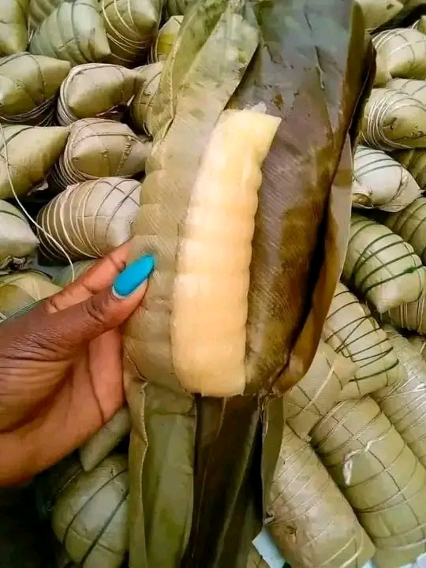

kwanga
Le kwanga est apprécié pour sa texture ferme et légèrement élastique, ainsi que pour son goût unique issu de
la fermentation du manioc. Il est souvent utilisé comme accompagnement dans les repas traditionnels
africains.
Ingrédients :
- 2 kg de farine de manioc (farine de cossettes de manioc)
- Eau
- Feuilles de bananier ou de macabo (pour l'emballage)
- Dans un grand récipient, mélangez la farine de manioc avec suffisamment d'eau pour obtenir une pâte
homogène. La consistance doit être assez épaisse.
- Couvrez le récipient et laissez fermenter la pâte pendant 2 à 3 jours. La fermentation est essentielle
pour développer les saveurs caractéristiques du kwanga.
- Pendant que la pâte fermente, préparez les feuilles de bananier. Passez les feuilles rapidement sur une
flamme ou dans de l'eau chaude pour les assouplir et éviter qu'elles ne se déchirent lors de
l'emballage. Découpez-les en grandes sections d'environ 30 cm de longueur.
- Après la fermentation, divisez la pâte de manioc en portions égales.
- Placez une portion de pâte sur une feuille de bananier et roulez la feuille autour de la pâte pour
former un paquet bien serré. Pliez les extrémités de la feuille pour fermer le paquet. Répétez
l'opération pour chaque portion de pâte.
- Dans une grande marmite ou un cuiseur à vapeur, disposez les paquets de kwanga. Ajoutez suffisamment
d'eau pour cuire à la vapeur, mais sans que les paquets ne soient immergés.
- Couvrez et laissez cuire à la vapeur pendant 2 à 3 heures, en vérifiant régulièrement que l'eau ne
manque pas dans la marmite.
- Une fois la cuisson terminée, retirez les paquets de kwanga de la marmite et laissez-les refroidir à
température ambiante.
- Le kwanga est prêt à être servi. Déballez chaque paquet et coupez le kwanga en tranches épaisses. Il
peut être servi avec des plats en sauce, du poisson, de la viande, ou des légumes.